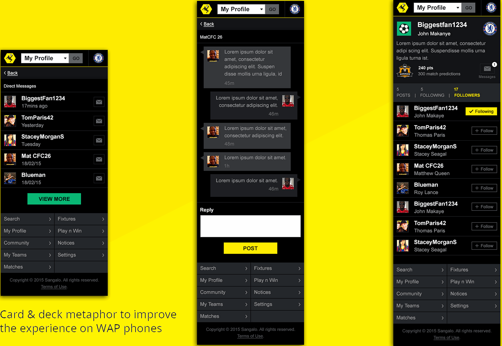
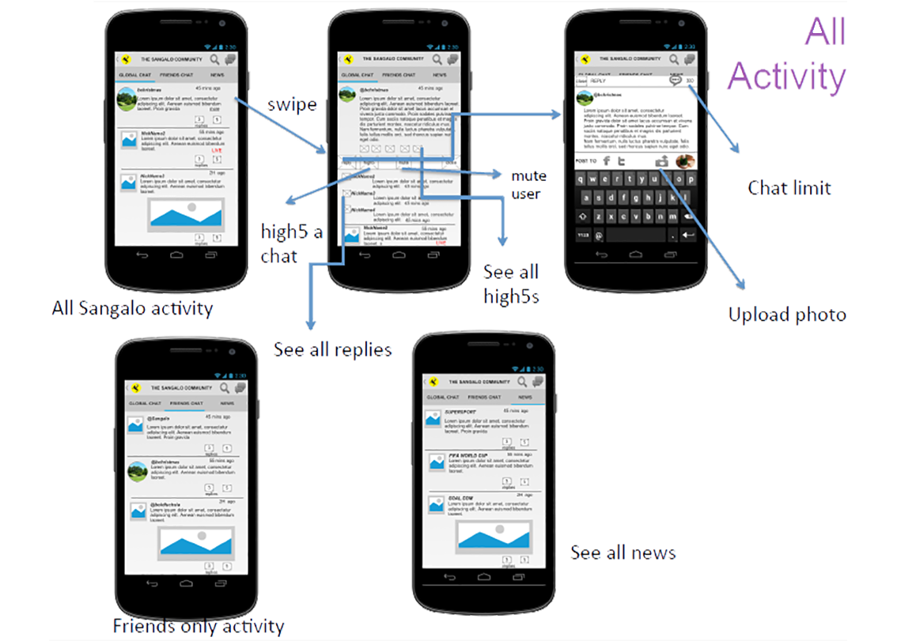
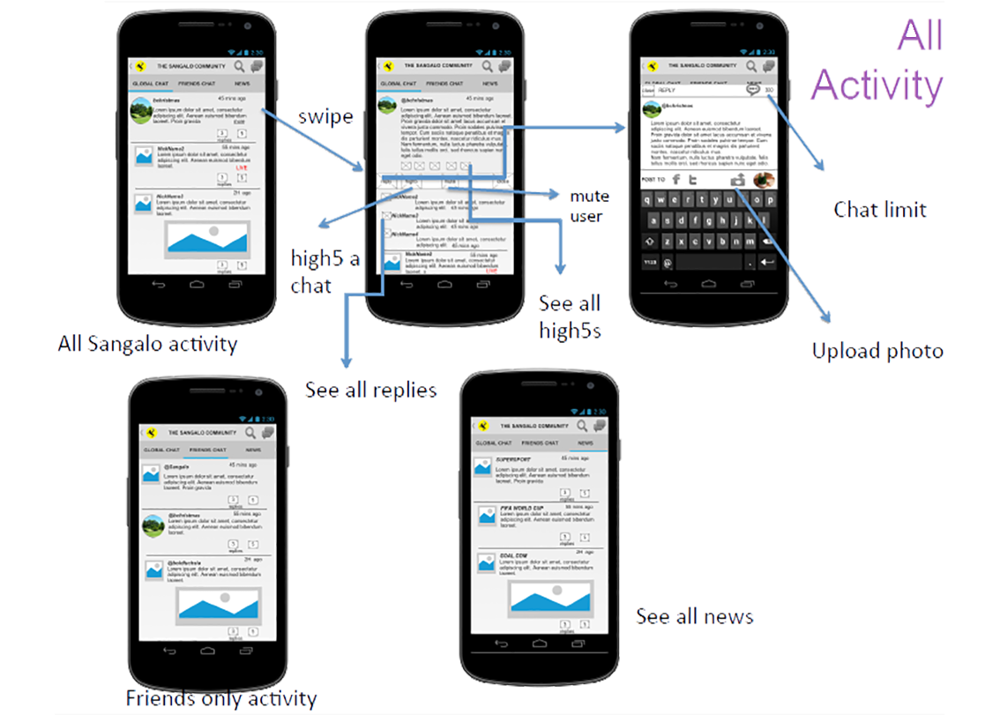

Sangalo is the mobile app equivalent to conversations at the pub. Football and its conversations are huge relaxing pastime activities for most young men in Nigeria.(N.B.- This product was acquired by iConcepts).
At the time, about 73% of football fans in Nigeria were low income to unemployed young men between the ages of 15-35. Due to their economic status, over 64% used feature phones while less than 28% use low-end Android phones.
The product goal was to allow each fan irrespective of his device share his opinion and participate in conversations.
Our users wanted to be able to share their opinions, irrespective of the device they were using. They wanted to be part of the community. In order to create a similar yet unique experience on each device for our users, we had to understand how they used their devices (e.g. what apps were used the most on their phones) and design a similar experience to that app (note that there were 3 types of devices/experiences->low and high end feature phone, and Android phones). In regards to the most used apps, the following were the results:
- For low-end feature phones users used their Phone Call and SMS apps the most
- For the high end feature phones users used the same apps as above with the default mobile browser following closely behind
- For Android devices the results were a lot closer with WhatsApp coming in a close fourth
Each device had a unique experience e.g. different OSes and each with its limitations/improvements. Low end feature phones were cheap but came with no connectivity to the internet, high end feature phones had WAP connectivity and cheap Androids had full HTML connectivity. After brainstorming, sketching and testing our hypotheses, we decided to build unique experiences for each user's device for them to access the community:
Low end feature phones: The community was accessible via USSD, while synced behind the scenes with the larger web community. This was because SMS/phone calls were the easiest apps used by owners of these devices and there would be no learning curve.
High end feature phones: The community was accessible via WAP (XHTML Basic using a combination of card-and-deck metaphor and web pages). We also had to design the UI to take into account the limited screen display with limited color.
Android devices: The community was accessible via the conventional web (HTML web pages). We had initially inherited an iPhone and Android hybrid app designed by the previous design team, however, we killed this because our users prefered to access the web accross devices which was based on a misconception of apps being more data intensive (internet data connectivity was expensive).
Here are some wireframes used during the process.
 

Overall, this split experience across device had multiple positive effects:
- Signup numbers increased by 343%
- User retention 48%
- Average time spent on Sangalo by 42%
- Alternate source of revenue discovered (yeah, not user related but it was great for investors).